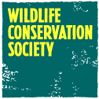

|  |
WELCOME TO THE WILDLIFE CONSERVATION SOCIETY |
|---|
The Wildlife Conservation Society is an organization with an extraordinary breadth of activities and audiences.
Connecting it all is a simple statement:
We stand for wildlife.
We believe that ‘conservation’ must involve a commitment to preserving species and landscapes and inspire people
to care deeply and act effectively.